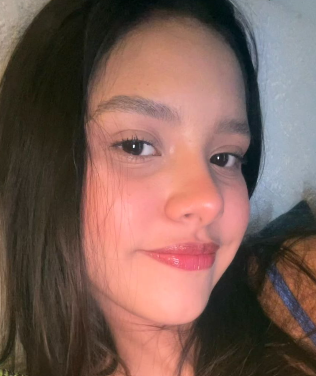
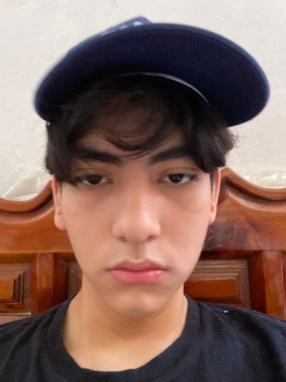
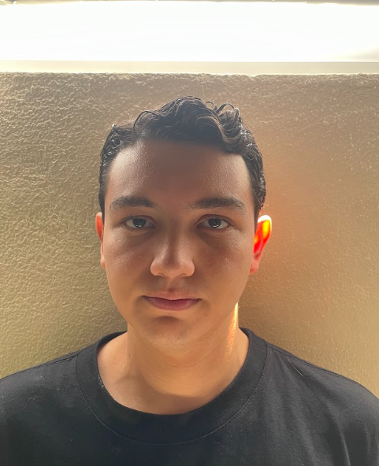
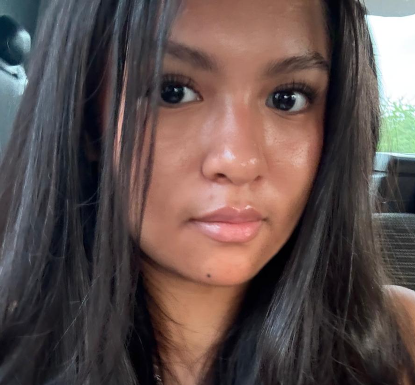
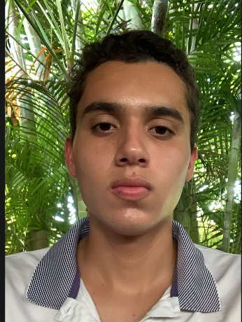
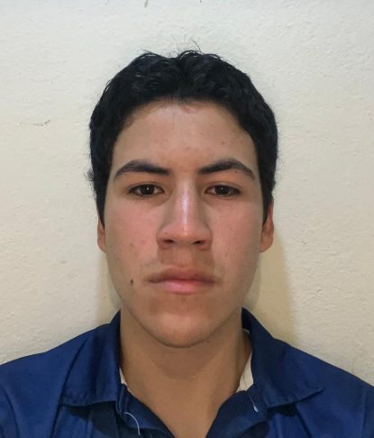

Valentina Nuñez
Verifico el entenamiento del Modelo IA
Responsable del entrenamiento de la red neuronal y la integración técnica del clasificador.

Diego Mastache
Guion del video
El encargada de la realizacion del guion del video.

Roberto Sampedro
Desarrollador del codigo de la página Web / UI
Diseñó la interfaz de usuario y la arquitectura de navegación del sitio web completo.

Camila Cruz
editora del video
Productora del video documental y encargada de los elementos gráficos de la plataforma.

Arturo de la Barrera
Realizo el entrenamiento del Modela
Encargado de ralizar del modelo en Teachable Machine ademas de ralizar los respectivas clases.

Tadeo Barcenas
Control de Calidad (QA)
Encargado de las pruebas del modelo y la verificación de la línea de tiempo interactiva.